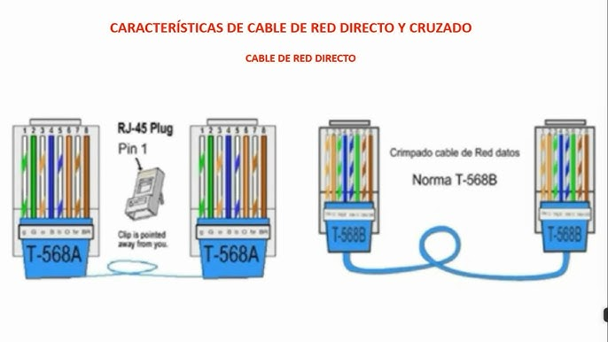

Todo sobre Cables Ethernet

Los cables Ethernet son el medio físico más utilizado en redes LAN. Usan cable UTP (par trenzado) para transmitir datos entre dispositivos como computadoras, switches y routers.
🔹 Tipos de Cable Ethernet

Cable Directo
Mismo estándar en ambos extremos (A-A o B-B). Se usa para PC a switch o router.

Cable Cruzado
Un extremo A y otro B. Se usa para conectar dos computadoras directamente.
🔹 Diferencia Visual

🔹 Estándares de Cableado
Existen dos configuraciones: T568A y T568B.
📊 T568A

| Pin | Color |
|---|---|
| 1 | Blanco/Verde |
| 2 | Verde |
| 3 | Blanco/Naranja |
| 4 | Azul |
| 5 | Blanco/Azul |
| 6 | Naranja |
| 7 | Blanco/Marrón |
| 8 | Marrón |
📊 T568B

| Pin | Color |
|---|---|
| 1 | Blanco/Naranja |
| 2 | Naranja |
| 3 | Blanco/Verde |
| 4 | Azul |
| 5 | Blanco/Azul |
| 6 | Verde |
| 7 | Blanco/Marrón |
| 8 | Marrón |
🔹 ¿Cómo identificar los cables?
- Directo: Ambos extremos iguales
- Cruzado: Diferentes (A y B)
🔹 Uso de cada cable
| Conexión | Tipo de Cable |
|---|---|
| PC a Switch | Directo |
| PC a Router | Directo |
| PC a PC | Cruzado |
| Switch a Switch | Cruzado |